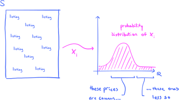
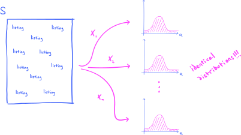
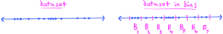
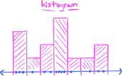

6. Connecting theory to practice: data and samples#
6.1. Data and random samples#
Except for Michelson’s measurements of the speed of light that we glimpsed in the Introduction, we have not considered any real-world datasets in this course. Sure, we’ve studied a few toy examples of “real world” scenarios mostly involving coin flips or some strange, contrived die roll scheme, but these are a far cry from the datasets that you might encounter in your career. Indeed, the majority of our effort so far has gone into studying and understanding abstract probability spaces and random variables. In short: We have been focusing on theory. Now, however, it’s time to begin exploring how our theory connects to the real world.
Our exploration begins with Airbnbs. Suppose we have at hand a sample of daily prices (in USD) for Airbnbs in Austin, Texas, over the last 12 months:
Show code cell source
import pandas as pd
import numpy as np
import matplotlib.pyplot as plt
import seaborn as sns
# hide annoying warnings for tight_layout()
import warnings
warnings.filterwarnings("ignore")
# set custom style for plots
plt.style.use('../aux-files/custom_style_light.mplstyle')
# make sure this comes last in the imports!
# change the output resolution of figures
import matplotlib as mpl
mpl.rcParams['figure.dpi'] = 600
# end import section
sample = pd.read_csv('../aux-files/austin_sample.csv')
# pull out the price column to convert 'sample' from a dataframe to a series
sample = sample['price']
sample
0 44.01
1 32.83
2 112.50
3 31.76
4 104.05
...
3967 212.17
3968 200.25
3969 382.34
3970 199.20
3971 149.58
Name: price, Length: 3972, dtype: float64
Though the sample consists of quite a few prices (\(n=3{,}972\) of them, in fact), it does not represent all prices. In fact, there were a little over 14,500 total listings during the time period from which our sample was drawn.
To fit this into our theoretical framework, we conceptualize the collection of all 14,500 listings as a probability space \(S\). (I will talk about the associated probability measure below.) Then, we conceptualize the price of a listing as a random variable
which takes a listing from the population \(S\) as input and spits out its price:
The actual prices in our sample are called observed values of the random variable \(X\) and, as in previous chapters, they are represented with a lowercase \(x\). We would list the elements in our sample as
where \(n=3{,}972\).
So far, this discussion is not all that different from ones that we have had before; in fact, I can even use the same cartoon from previous chapters to visualize the action of the random variable \(X\):

However, what makes our current scenario different from those considered in past chapters is that we have an entire sample of prices at hand, not just a single price. How are we to fit samples and datasets into our theoretical framework?
The answer is pretty obvious, actually. After all, a collection of \(n\) prices like those in our sample must come from a collection of \(n\) listings, right? This suggests that we should simply duplicate the random variable \(X\) to obtain a sequence of random variables
where the random variable \(X_k\) (for \(1\leq k \leq n\)) spits out the price of the \(k\)-th listing. Something like:

To make this work, technically we need to replace the sample space \(S\) with its \(n\)-fold cartesian power, but we won’t worry about these details. For us, it’s enough to understand this process at the intuitive level.
Now, what about probability? Remember, I called the population \(S\) of all listings a probability space, so evidently it must come equipped with a probability measure \(P\). But here’s the truth:
We don’t actually care about \(P\).
Indeed, \(P\) is a purely academic object whose only role in this business is to make the theory under the hood tick along. It’s mostly pure mathematicians like me that spend time worrying about \(P\), but it is never, ever mentioned or acknowledged in real-world scenarios.
On the other hand, we do very much(!) care about the probability distributions of the random variables \(X_1,X_2,\ldots,X_n\). We will be devoting a huge amount of time and effort over the rest of this course trying to figure out the distribution of this or that random variable. In the context of our Airbnb prices, the distributions of the \(X_k\)’s tell us the distribution of prices:
{kind=link}
But because each of the random variables \(X_k\) is essentially a “duplicate” of the single ‘price’ random variable \(X\), they all have the same distribution, in the sense that
for all events \(A\subset \mathbb{R}\). If we draw each of the random variables along with their distributions, we would get:
{kind=link}
Notice that all the distributions are the same! This leads us to one of the main definitions in this entire course:
Definition 6.1
Let \(X_1,X_2,\ldots,X_n\) be a sequence of random variables, all defined on the same probability space.
The random variables are called a random sample if they are independent and identically distributed (IID).
Provided that the sequence is a random sample, an observed random sample, or a dataset, is a sequence of real numbers \(x_1,x_2,\ldots,x_n\) where \(x_k\) is an observed value of \(X_k\).
In regard to the second bullet point, two random variables are said to be independent if the probability of one of the random variables taking a particular value is not influenced or affected by the other random variable taking a particular value. This isn’t a precise definition, and it must be adapted to apply to an entire sequence of random variables, but it is good enough for now. (The precise definition will come in Definition 7.11.)
Take care to notice the difference between a random sample (without the modifier) and an observed random sample—the former is an IID sequence of random variables, while the latter is a sequence of real numbers!
Why have two different types of random samples? Answers:
The roles of random samples
Observed random samples \(x_1,x_2,\ldots,x_n\) are the datasets that we work with in the real world. It is obvious why we care about these.
We use random samples \(X_1,X_2\ldots,X_n\) when we want to reason theoretically about the observed random samples that we encounter in the real world. For example, suppose that you want to prove that some type of statistical estimator or machine learning algorithm works well for any dataset. Then you must argue using random samples consisting of IID random variables!
6.2. Statistical models and empirical distributions#
If \(X_1,X_2,\ldots,X_n\) is a random sample, then by definition the probability distributions of the \(X_k\) are all identical. This will often be written as either
where \(f\) is the density function of the \(X_k\)’s and \(F\) is their distribution function. These functions are usually unknown. Our goal is then to discover their identity using observed random samples (i.e., datasets!).
Sometimes, we might have a hunch that the mystery distribution \(F\) comes from a parametrized family of distributions; for example, we might believe that
for some unknown true parameters \(\mu_0\) and \(\sigma_0\). Then, using data, our goal is to estimate \(\mu_0\) and \(\sigma_0\) as accurately as possible. In this scenario:
The parameters \(\mu_0\) and \(\sigma_0\) are often called population parameters.
The collection of all normal probability distributions \(\mathcal{N}(\mu,\sigma^2)\) is called a statistical model of the data.
The true (but unknown) probability distribution \(\mathcal{N}(\mu_0,\sigma_0^2)\) inside the statistical model is called the (true) population distribution.
Since the normal distributions \(\mathcal{N}(\mu,\sigma^2)\) depend on a finite number of parameters, we say that the normal statistical model is parametric. However, sometimes we may believe that the data is modeled by a collection of distributions that are not parametrized in any natural way by a finite set of parameters; these latter types of statistical models are called non-parametric.
At the risk of oversimplification, what I have just describe is, in a nutshell, the entire program of inferential statistics. A major portion of the second half of this course will be devoted to studying clever procedures and algorithms that use datasets to generate quantitative estimates of various population parameters. As a first step in this direction, in this chapter we study empirical distributions. These are the probability distributions of observed datasets. Our interest in datasets hinges on the assumption that they accurately represent the larger population; if so, then their empirical distributions should reasonably match the unknown population distribution.
Here’s the main definition:
Definition 6.2
Let \(X_1,X_2,\ldots,X_n \sim F\) be a random sample from an unknown distribution function \(F\), and let \(x_1,x_2,\ldots,x_n\) be an observed random sample. Then the empirical distribution of the dataset is the discrete probability measure on \(\mathbb{R}\) with probability mass function
The empirical cumulative distribution function (ECDF) of the dataset is the CDF of the empiricical disribution. It is often denoted \(\widehat{F}(x)\), and it is given by the usual formula
You can think of empirical probabilities as relative frequencies. Indeed, this is essentially the definition described by the formula (6.1): It says that \(p(x)\) is the relative frequency of the number \(x\) in the dataset.
It’s time to bring back the Airbnb prices! I have asked the computer to generate their ECDF:
Show code cell source
sns.ecdfplot(sample)
plt.xlabel(r'$x=$price')
plt.ylabel('accumulated probability')
plt.tight_layout()

Remember, the CDFs of discrete distributions are step functions. So why doesn’t this look like a step function? Essentially, the data points are so numerous and packed together so tightly along the \(x\)-axis that we can’t see the steps. But rest assured, if we were to zoom in, we’d see them.
If we are confident that our observed sample of Airbnb prices is reasonably representative of the unknown population of prices, then its ECDF serves as an approximation to the true population CDF. If we assume that the unknown population distribution is continuous, then there is also an unknown population density function floating around out there in the ether waiting to be discovered. Can we use our ECDF to guess what its shape might be?
Absolutely!
The trick is to remember that density functions are the derivatives of CDFs. So, when we look at our ECDF above, we can try to get a feeling for the shape of the density function by estimating the slopes of the tangent lines to the graph of the ECDF. I realize that the ECDF is technically a step function, and hence all of its tangent lines (which exist) are horizontal; but from our perspective, it looks like a nice smooth-ish curve that has positively sloped tangent lines.
To aid our sketch of the unknown density function, it might help to superimpose the CDF of a normal distribution on top of our ECDF:
Show code cell source
from scipy.stats import norm # import a normal random variable from scipy
sorted_sample = sample.sort_values()
xbar = np.mean(sample) # sample mean
s = np.std(sample) # sample standard deviation
y_norm = norm(loc=xbar, scale=s).cdf(sorted_sample) # toss the data into the normal CDF
sns.ecdfplot(sample, label='sample ECDF')
plt.plot(sorted_sample, y_norm, label='normal CDF')
plt.axvline(x=xbar, linestyle='dashed', color='r', label='sample mean')
plt.xlabel(r'$x=$price')
plt.ylabel('accumulated probability')
plt.legend()
plt.tight_layout()

In this figure, I’ve plotted the CDF from a \(\mathcal{N}(\mu,\sigma^2)\) distribution, where I’ve used the sample mean and standard deviation for the parameters \(\mu\) and \(\sigma\) (more on these below).
This is a little of what I can glean from this last figure: If we believed that the true population distribution was normal, the data tells us otherwise. Indeed, the two CDFs have some fairly significant differences. Notice that the ECDF is steeper than the normal CDF right before the red dashed line, and that it also has an inflection point before this line. This tells me that the sample density curve should be peaked slightly to the left of the normal density curve. As we pass over the dashed line, the ECDF is concave downward and hence the sample density curve is decreasing over these \(x\)-values as it drops downward into its tail. But as it begins its descent, the normal CDF is steeper, so the sample density curve should be descending at a quicker rate, putting it underneath the normal density curve. But then, as we get toward the right edge of the figure, the slopes of the ECDF appear to be larger than those of the normal CDF, and so the two density curves should cross again, putting the sample density’s upper tail on top of the normal density’s tail. In fact, if I squint hard enough, it appears that the ECDF might have a second inflection point on the far right of the figure.
As I will show you below, computers are capable of estimating PDFs from data using something called kernel density estimation (KDE). If I feed the Airbnb data into my computer, it returns the following sketch of the data density curve:
Show code cell source
y_norm = norm(loc=xbar, scale=s).pdf(sorted_sample)
sns.kdeplot(sample, label='estimated data PDF')
plt.plot(sorted_sample, y_norm, label='normal PDF')
plt.xlabel(r'$x=$price')
plt.ylabel('probability density')
plt.xlim(0, 510)
plt.legend()
plt.tight_layout()

The estimated data PDF looks pretty strange, due to the fairly drastic fluctuations up and down. Below, when we talk about KDEs in more detail, I will teach you how to smooth out these fluctuations by varying a parameter called bandwidth.
6.3. Histograms#
In the previous section, we used a plot of the ECDF of the Airbnb prices in order to visualize the empirical distribution. From this plot, we were able to get a sense of the shape of the dataset.
There are a few more ways that we might attempt to visualize the empirical distribution. Indeed, since the empirical distribution of the Airbnb prices is technically discrete, we might attempt to visualize it using the probability histograms that we saw in Section 2.7. However, as we saw in the previous section, the data points in our sample are so numerous and packed so closely together that such a probability histogram would be essentially useless. We would have \(3{,}548\) bars in our histogram, one for each unique price in our dataset!
But here’s an idea: Suppose we “bin together” nearby prices along the \(x\)-axis before we draw the histogram. In other words, imagine we chop up the \(x\)-axis into smaller subintervals called bins, and then group together nearby data points in these bins:
{kind=link}
In the figure on the right, there are seven bins, labeled \(B_1,B_2,\ldots,B_7\). The number of bins can either be chosen explicitly by us, or we can let the computer choose the “optimal” number of bins based on some rule of thumb. Either way, the number \(m\) of bins need not be \(7\).
Now, to draw the “binned” histogram, we put a rectangle on top of each bin:
{kind=link}
The heights of the rectangles must satisfy two properties: (1) Their areas must sum to \(1\), and (2) their heights must be proportional to the number of data points that fall within the bins. For example, you can see that the taller rectangles in the figure contain more data points in their base bins. If \(m\) is the total number of bins and \(n\) is the size of the data set, then to satisfy both these properties, we can choose the \(k\)-th rectangle (for \(k=1,2,\ldots,m\)) to have height
Of course, computers are capable of plotting these types of histograms. Here is one for our Airbnb prices:
Show code cell source
# the parameter `ec` stands for edge color. here, I've chosen black.
# the `density` parameter normalizes each rectangle so that their areas sum to 1.
plt.hist(sample, ec='b', density=True)
plt.xlabel(r'$x=$price')
plt.ylabel('probability')
plt.tight_layout()

Taking a moment to look at this histogram, if you then scroll up and look at the estimated data density curve in the previous section, you’ll notice that they match up pretty well. Thus, both ways of getting a sense of the shape of the data (estimated density curves and histograms) do their jobs adequately.
Be warned, however, that the shapes of these types of histograms are quite sensitive to the number of bins (hence also the bin width), and making the wrong choice for this number can sometimes hide important features of the data. Here’s a histogram of the Airbnb data with 100 bins:
Show code cell source
plt.hist(sample, ec='b', density=True, bins=100)
plt.xlabel(r'$x=$price')
plt.ylabel('probability')
plt.tight_layout()

Though there are lots more bins here than our first histogram, I can still get a pretty good sense of the shape of the data. When you increase the number of bins, you tend to lose “smoothness” of the histogram.
At the other extreme, here’s a histogram with three bins:
Show code cell source
plt.hist(sample, ec='b', density=True, bins=3)
plt.xlabel(r'$x=$price')
plt.ylabel('probability')
plt.tight_layout()

This last histogram is not particularly informative. I get a sense that the sample data is skewed toward the right, but that’s about it.
So, how do you choose the number of bins? First, you might let the computer decide for you, using the default setting. This default setting is often based off of rules of thumb that have been demonstrated to work well for some reason or another. Then, you can play with the number of bins manually, fine-tuning the number until you get a figure that you believe most accurately represents the shape of the data.
6.4. Kernel density estimation#
Let’s return now to an idea that we met above: Estimating a empirical distribution’s density curve. I mentioned that one way to accomplish this task is to use something called a kernel density estimator (KDE). I will now give a very brief introduction to these estimators.
Naturally, a kernel density estimation begins by choosing the kernel, which is a function that has a “bell shape,” not unlike the normal density curve. In fact, one can even choose the normal density curve as the kernel, and then one obtains Gaussian KDE. These will be the only types of kernels that we will consider.
Imagine for simplicity that we have three data points along the \(x\)-axis. The idea is then to place three normal density curves directly over top of the data points. We then sum these curves and divide by \(3\) (to normalize the area under the curve to \(1\)), obtaining a kernel density estimate. The variances (i.e., the spread) of the normal density curves are controlled by a parameter called bandwidth, which is represented by the letter \(h\). Values \(h>1\) correspond to lower variance, while values \(h<1\) correspond to higher variance. Here are three examples of different values of \(h\):
Show code cell source
x = np.linspace(-4, 6, 200)
fig, axes = plt.subplots(3, 4, sharey=True, sharex=True, figsize=(10, 5))
bandwidths = [1, 0.5, 1.5]
for h in bandwidths:
idx = bandwidths.index(h)
y1 = norm().pdf(x / h) / h
y2 = norm().pdf((x - 2) / h) / h
y3 = norm().pdf((x - 3) / h) / h
axes[idx, 0].plot(0, -0.01, 'o', color='#486AFB')
axes[idx, 0].plot(2, -0.01, 'o', color='#486AFB')
axes[idx, 0].plot(3, -0.01, 'o', color='#486AFB')
axes[idx, 0].set_xlim(-4, 6)
axes[idx, 0].set_ylabel('density')
axes[idx, 1].plot(x, y1, )
axes[idx, 1].plot(x, y2, color='#486AFB')
axes[idx, 1].plot(x, y3, color='#486AFB')
axes[idx, 1].plot(0, -0.01, 'o', color='#486AFB')
axes[idx, 1].plot(2, -0.01, 'o', color='#486AFB')
axes[idx, 1].plot(3, -0.01, 'o', color='#486AFB')
axes[idx, 1].set_title(rf'bandwidth $h={h}$')
axes[idx, 2].plot(x, y1, )
axes[idx, 2].plot(x, y2, color='#486AFB')
axes[idx, 2].plot(x, y3, color='#486AFB')
axes[idx, 2].plot(0, -0.01, 'o', color='#486AFB')
axes[idx, 2].plot(2, -0.01, 'o', color='#486AFB')
axes[idx, 2].plot(3, -0.01, 'o', color='#486AFB')
axes[idx, 2].plot(x, (y1 + y2 + y3) / 3, label='sum of kernels')
axes[idx, 3].plot(x, (y1 + y2 + y3) / 3, label='sum of kernels', color='#FD46FC')
plt.tight_layout()

Reading from left to right, here’s what’s going on:
The plots in the first column display the original three data points.
In the second column, you see the normal density curves over top of the data points for three different values of the bandwidth \(h\).
In the third column, I have plotted the sum of the three normal density curves (divided by \(3\)), which are, by definition, the KDEs generated from the data set.
In the last column, I have plotted the KDEs on their own.
Now, cover up the middle two columns in the figure. Which of the KDEs do you believe does the best job of conveying the shape of the data? I would say it’s a split decision between \(h=1\) and \(h=0.5\).
You’ve seen how to generate a KDE for a small three-sample dataset. The KDE that I generated above for the Airbnb prices follows the exactly same procedure, but instead of three normal density curves, there are now 3,972 of them, one for each data point in the sample! Here are three KDEs for the Airbnb prices, with different bandwidths:
Show code cell source
bandwidths = [0.05, 0.1, 0.3]
fig, axes = plt.subplots(nrows=1, ncols=3, sharey=True, sharex=True, figsize=(10, 3))
for h in bandwidths:
idx = bandwidths.index(h)
sns.kdeplot(sample, ax=axes[idx], bw_method=h)
axes[idx].set_xlabel(r'$x=$price')
axes[idx].set_title(rf'bandwidth $h={h}$')
plt.xlabel(r'$x=$price')
axes[0].set_ylabel('probability density')
plt.tight_layout()

The KDE curve on the left is essentially the original KDE that we saw in the previous section. I mentioned then that it looked pretty strange, due to the repeated fluctuations up and down. Now, by playing with the bandwidth, we see how to smooth out these fluctuations.
So, we’ve seen that KDEs are supposed to serve as estimates for the density curves of datasets, but they are highly sensitive to the choice of bandwidth \(h\). How do you choose \(h\)? Just like the ‘number of bins’ parameter for histograms, you are best off first letting the computer decide the bandwidth for you, and then manually fine-tune it (if needed) until you get a KDE that you believe best represents the data.
6.5. QQ-plots#
Another convenient way to compare two probability distributions is through visualizations called quantile-quantile plots, or QQ-plots. It takes a bit of practice to learn how to interpret them, however.
The basic idea is quite simple. A QQ-plot gives us a way to compare the quantiles of two distributions—we expect that if the distributions are similar, then their quantiles should be distributed similarly. One often uses QQ-plots to compare empirical distributions of datasets against normal distributions in order to check if the data is normally distributed. In fact, this will be our exclusive use case for QQ-plots in this course, and my description here will thus be limited to this special case.
Now, we already have from Section 2.10 a definition of quantiles that works for any type of distribution. When we use QQ-plots, however, we adopt a different definition for empirical distributions of datasets. To describe it, for convenience, let’s suppose that the points in our dataset are labeled with \(y\)’s instead of \(x\)’s. (You’ll see why this is convenient, in just a moment.) Suppose that we order our dataset in non-decreasing order:
where \(n\) is the size of the dataset. Notice that some data points might be repeated, which accounts for the “\(\leq\)” sign instead of strict inequality “\(<\).” Then, to each data point we associate the following fraction:
for \(k=1,2,\ldots,n\). We are supposed to think of \(y_k\) as being the \((k-1/2)/n\)-quantile, though this does not coincide with our earlier definition of quantile.
For an example, suppose that \(n=5\) and that all the data points are distinct. Then, if we plot our dataset along an axis along with the labels (6.2), we get the following picture:

Thus, if the labels (6.2) really did mark the \(y_k\)’s as quantiles, then we would expect 10% of the data to fall to the left of \(y_1\) and 10% to the right of \(y_5\), and 20% of the data to fall between each pair of consecutive data points. But this isn’t actually true, of course. Moreover, if the data points are not all distinct, say \(y_k = y_{k+1}\) for some \(k\), then the single number \(y_k\) would be assigned two different quantile labels, \((k-1/2)/n\) and \((k+1/2)/n\)! Nevertheless, this is the convention used when construction QQ-plots (though even this convention varies from source to source).
To construct the QQ-plot, we then compare the “quantiles” (6.2) of the dataset to the actual quantiles of the standard normal distribution \(\mathcal{N}(0,1)\) by first defining
for each \(k=1,2,\ldots,n\), where \(\Phi\) is the CDF of the standard normal distribution. In particular, note that \(x_k\) really is the \((k-1/2)/n\)-quantile of \(\mathcal{N}(0,1)\), according to our earlier definition of quantile. The QQ-plot then consists of the points
Here, I ask the computer to generate the QQ-plot for the Airbnb prices:
Show code cell source
from statsmodels.graphics.gofplots import qqplot
qqplot(sample, a=1/2, alpha=0.25)
plt.xlabel(r'$x_k=$normal quantiles')
plt.ylabel(r'$y_k=$sample quantiles')
plt.tight_layout()

Ok, great. How do we interpret this thing?
Essentially, what we are looking for in a QQ-plot is whether the points fall along some straight line \(y = ax + b\). If the QQ-plot roughly falls along a line, then the dataset is close to being normally distributed.
Why is this true? To explain, suppose that the points in the QQ-plot fell exactly on a straight line, so that
for some \(a\) and \(b\) with \(a\neq 0\). Then, let
be the density of the standard normal distribution, so that \(\Phi(x) = \int_{-\infty}^x f(t) \ \text{d} t\). Now, if (6.3) were true, then
where I made the substitution \(t = (s-b)/a\) in going from the first integral to the second. But notice that the transformed function
is the density of \(\mathcal{N}(b,a^2)\), and so (6.4) shows that, provided (6.3) is true, the data point \(y_k\) is the \((k-1/2)/n\)-quantile of \(\mathcal{N}(b,a^2)\). We conclude:
If the QQ-plot falls nearly along the straight line \(y=ax+b\), then the empirical distribution of the dataset is closely approximated by the normal distribution \(\mathcal{N}(b,a^2)\).
Returning to the QQ-plot of the Airbnb prices with this intuition in mind, it does not appear that the dataset is normally distributed, since the plot does not fall along a straight line. But we knew this already, based on our examination of the ECDF, the histogram, and the KDE of the Airbnb prices.
Tip
Essentially what I am describing in this chapter is something called graphical exploratory data analysis (EDA), wherein one uses as many visualization schemes as possible to get a feel for the shape of a dataset. When conducting EDA, you want to use as many tools as possible, since any one particular tool often as disadvantages that might be offset by other tools. For example, while a plot of the ECDF and a QQ-plot do not carry effects from arbitrary choices like the number of bins for a histogram or the bandwidth of a KDE, they can also be harder to interpret. So, use everything you have at your disposal!
When the empirical distribution of a dataset is not normally distributed, so that its QQ-plot is curvy, one can sometimes “interpret” the concavity of the plot. But this can be tricky to do, and it’s difficult to write down hard and fast rules that work for all possible QQ-plot shapes. I encourage you to think on your own, however, what the concavity of the QQ-plot of the Airbnb prices means!
The Airbnb prices are almost continuous, so the QQ-plot of the dataset looks like a nice smooth curve. However, if your dataset is large, consisting of observed values of a discrete variable with a small-ish range, then the QQ-plot might have an unexpected shape with lots of horizontal stretches due to repetitions in the dataset.
For example, let’s consider a dataset consisting of sales data from an online retail store in the UK. Here’s a description:
Show code cell source
sample_sales = pd.read_csv('../aux-files/online_sales.csv')
sample_sales = sample_sales['Quantity']
sample_sales.describe()
count 447322.000000
mean 4.342078
std 4.426455
min -12.000000
25% 1.000000
50% 2.000000
75% 6.000000
max 23.000000
Name: Quantity, dtype: float64
The data consists of observations of the random variable
So, an observed value of \(y=3\) in the dataset means that three items were purchased in the order. From the ‘count,’ ‘max,’ and ‘min’ numbers in the description of the dataset, we see that the dataset contains nearly half a million data points distributed over discrete (integer) values ranging from \(y=-12\) to \(y=23\). (A negative value means that items were returned to the store.) Therefore, there are going to be lots of repetitions in this dataset.
Here’s the QQ-plot of this dataset:
Show code cell source
qqplot(np.sort(sample_sales), a=1/2, alpha=0.25)
plt.xlabel('normal quantiles')
plt.ylabel('sample quantiles')
plt.tight_layout()

In contrast to the QQ-plot of the Airbnb prices, this QQ-plot appears to be a series of disconnected horizontal lines. The \(y\)-value of a horizontal line corresponds to a value in the dataset that is repeated. But be very careful in interpreting the lengths of the horizontal lines as measures for how often the data points are repeated, as you would with the heights of the bars in a histogram. Indeed, because of the shape of the standard normal CDF (it is nearly flat away from its mean), the lengths of horizontal lines toward the bottom and the top of the QQ-plot are scaled up compared to the lengths of the horizontal lines in the middle of the plot. (I will explain this more precisely in class, with pictures.)
For example, focus on the horizontal lines in the QQ-plot at \(y=12\) and \(y=20\). These lines appear to have nearly the same length. But then look at the histogram of the data, which for comparison I’ve plotted behind a normal density curve with \(\mu=\) sample mean and \(\sigma=\) sample standard deviation.
Show code cell source
x = np.linspace(-12, 23)
y = norm(loc=sample_sales.mean(), scale=sample_sales.std()).pdf(x)
plt.hist(sample_sales, density=True, bins=20)
plt.plot(x, y)
plt.xlabel('quantity')
plt.ylabel('probability')
plt.tight_layout()

The histogram reveals that there are many, many fewer observations at \(y=20\) compared to \(y=12\), and yet the corresponding horizontal lines in the QQ-plot appear to have the same length! Again, this discrepancy is due to the shape of normal CDFs which are flat away from their means.
So, we should not think of the lengths of the horizontal lines in a QQ-plot as a measure of absolute discrepancy compared to a normal distribution. Rather, they are a measure of the relative discrepancy. In other words, their lengths should be proportional to the ratio
This helps resolve the conflict between the equality of the lengths of the horizontal lines at \(y=12\) and \(y=20\), for the normal distribution predicts that we should see \(y=12\) much more often than \(y=20\), so that the two relative discrepancies should be nearly equal.
6.6. Sample statistics#
As I mentioned above, most of what we have done so far falls under the heading of graphical exploratory data analysis (EDA). Now, I want to turn toward numerical EDA.
Let’s return to a general IID random sample
where \(F\) represents the (true) unknown population distribution function. The population distribution has a mean \(\mu_0\) and a standard deviation \(\sigma_0\), though these are very often unknown to us. Hence
for each \(k=1,2,\ldots,n\). Based on an observed random sample
how might we estimate the unknown population parameters \(\mu_0\) and \(\sigma_0\)?
Definition 6.3
Let \(x_1,x_2,\ldots,x_n\) be an observed random sample (i.e., a dataset). The sample mean is defined to be the number
while the sample variance is defined to be the number
The sample standard deviation \(s\) is defined, as usual, as the positive square root of the sample variance, \(s = \sqrt{s^2}\).
The sample mean \(\bar{x}\) and standard deviation \(s\) are supposed to serve as sample-based estimates for the true population mean \(\mu_0\) and standard deviation \(\sigma_0\). If we believe that the dataset is truly representative of the population, then these estimates should be close to their targets.
The definitions of \(\bar{x}\) and \(s^2\) are surely quite natural, except that the sample variance involves division by \(n-1\) instead of the sample size \(n\) like you might have expected. The reason for this is that, if we had a factor of \(1/n\) in \(s^2\) instead of \(1/(n-1)\), then the value of \(s^2\) would systematically on average underestimate the true value \(\sigma_0^2\) over repeated sampling. This can be demonstrated empirically through computer simulation, and it can also be proved theoretically as we will see later when we study bias of estimators. So for now, we will just take the above definition of \(s^2\) on faith, postponing till a later discussion the explanation regarding why it’s a good estimator.
Note that the sample mean \(\bar{x}\) is the mean of the empirical distribution of the dataset, the latter understood as a discrete probability distribution on \(\mathbb{R}\). If the formula for \(s^2\) had \(1/n\) instead of \(1/(n-1)\), then \(s^2\) would be the variance of the empirical distribution.
In previous sections, I used the sample means and variances to plot normal density curves to aid our graphical EDA. Here are those values, for the two datasets that we considered:
Show code cell source
xbar_airbnb = sample.mean()
s_airbnb = sample.std()
xbar_UK = sample_sales.mean()
s_UK = sample_sales.std()
print(f'The sample mean of the Airbnb dataset is {xbar_airbnb:.2f}.')
print(f'The sample standard deviation of the Airbnb dataset is {s_airbnb:.2f}.\n')
print(f'The sample mean of the online sales dataset is {xbar_UK:.2f}.')
print(f'The sample standard deviation of the online sales dataset is {s_UK:.2f}.')
The sample mean of the Airbnb dataset is 154.11.
The sample standard deviation of the Airbnb dataset is 102.48.
The sample mean of the online sales dataset is 4.34.
The sample standard deviation of the online sales dataset is 4.43.
We may also estimate population quantiles using sample quantiles. Here are the definitions of the latter, which should not be surprising:
Definition 6.4
Let \(x_1,x_2,\ldots,x_n\) be an observed random sample. The sample q-quantile is the \(q\)-quantile of the empirical distribution of the dataset.
Here, when I write “\(q\)-quantile,” I am referencing the original definition of “\(q\)-quantile” that we saw back in Section 2.10, not the alternate definition we used when discussing QQ-plots.
As with the sample statistics \(\bar{x}\) and \(s^2\) we saw above, the sample quantiles are supposed to be sample-based estimates for the true population quantiles.
The 0.25-, 0.5-, and 0.75-quantiles (these are also called the first, second, and third quartiles) of the online sales dataset were actually displayed above when I asked the computer to describe the dataset. Here is that description again:
Show code cell source
sales_stats = sample_sales.describe()
sales_stats
count 447322.000000
mean 4.342078
std 4.426455
min -12.000000
25% 1.000000
50% 2.000000
75% 6.000000
max 23.000000
Name: Quantity, dtype: float64
In the output, the sample 0.25-quantile is listed as the sample 25th percentile, and likewise for the sample 0.5-quantile (the sample median) and the sample 0.75-quantile. For the Airbnb dataset, we have:
Show code cell source
airbnb_stats = sample.describe()
airbnb_stats
count 3972.000000
mean 154.114371
std 102.481302
min 0.820000
25% 83.240000
50% 121.555000
75% 199.460000
max 509.790000
Name: price, dtype: float64
Along with the sample quartiles, you can also see that this method from the pandas library conveniently outputs the sample mean and standard deviation, as well as the size of the dataset (the count) and the minimum and maximum sample values.
The range over which the middle 50% of a sample sits is defined in:
Definition 6.5
Let \(x_1,x_2,\ldots,x_n\) be an observed random sample. The sample interquartile range (sample IQR) is the difference
So, using the outputs above, we see that the sample IQRs of the Airbnb and online sales datasets are:
Show code cell source
iqr_airbnb = airbnb_stats['75%'] - airbnb_stats['25%']
iqr_UK = sales_stats['75%'] - sales_stats['25%']
print(f'The IQR for the Airbnb dataset is {iqr_airbnb:.2f}.')
print(f'The IQR for the online sales dataset is {iqr_UK:.2f}.')
The IQR for the Airbnb dataset is 116.22.
The IQR for the online sales dataset is 5.00.
With the definition of sample IQR in hand, we may now define outliers:
Definition 6.6
Let \(x_1,x_2,\ldots,x_n\) be an observed random sample. Then a data point \(x_k\) is called an outlier if it is above an upper threshold value
or if it is below a lower threshold value
There’s a very convenient way to visually summarize all these sample statistics (along with outliers) which we will discuss immediately in the next section.
6.7. Box plots and violin plots#
Let’s first consider the online sales data, along with all the summary sample statistics that we described and computed in the previous section. We may combine all these summarize all this information in something called a box plot (or box and whisker plot):
Show code cell source
sns.boxplot(x=sample_sales)
plt.xlabel(r'$x=$quantity')
plt.gcf().set_size_inches(10, 2)
plt.tight_layout()

The left edge of the central blue box is at \(x=1\), which as we saw above is the sample 0.25-quantile; likewise, its right edge is at \(x=6\), which is the sample 0.75-quantile. Therefore, the width of the box is exactly the sample IQR. The box thus represents where the middle 50% of the sample lives. The vertical line through the box is at \(x=2\), which is the sample 0.5-quantile, or the sample median.
You notice that the box has “whiskers.” The left whisker extends out to the minimum value in the dataset, or to the threshold value
for determining outliers, whichever is greater. In this case, the whisker extends to the threshold value, and then all the dots to the left of the whisker represent outliers in the lower tail of the distribution.
Likewise, the right whisker extends out to the maximum value in the dataset, or to the upper threshold value
for determining outliers, whichever is smaller. In this case, the dataset does contain outliers in its upper tail, so the whisker extends to the threshold value, and all the dots to the right are outliers.
Here’s the box plot for the Airbnb prices:
Show code cell source
sns.boxplot(x=sample)
plt.xlabel(r'$x=$price')
plt.gcf().set_size_inches(10, 2)
plt.tight_layout()

This time, there are no outliers in the lower tail of the distribution, since the minimum value in the dataset is 82 cents (really?!), which is greater than the lower threshold for determining outliers. However, there are lots of outliers in the upper tail of the distribution, and they are very densely packed together.
Now, what were to happen if we combined a box plot with one of the tools for graphical EDA that we studied earlier? Something like this:
Show code cell source
sns.violinplot(x=sample_sales, bw=0.3)
plt.xlabel(r'$x=$quantity')
plt.gcf().set_size_inches(10, 3)
plt.tight_layout()

This is a violin plot of our online sales data (the reason for the name is evident). Along the central horizontal line is a box plot—can you see it? The white dot in the box (which is really a flattened rectangle) represents the sample median. You can see the upper whisker in its entirety, but the tip of the lower whisker is not visible. Then, above the central horizontal line is displayed a KDE of the dataset, and its mirror image is displayed below. For comparison, here’s a picture of a KDE of the dataset all on its own:
Show code cell source
sns.kdeplot(sample_sales, bw_method=0.3)
plt.gcf().set_size_inches(8, 2)
plt.xlabel('quantity')
plt.ylabel('probability density')
plt.tight_layout()

So, violin plots are tools belonging to both graphical and numerical EDA since they combined KDEs with box plots. They have advantages over just plain box plots because they are better able to convey a sense of the shape of a dataset. For example, box plots cannot display multiple data modes (multiple peaks in the distribution), whereas KDEs can. We see this in the online sales dataset above, which is bimodal (has two peaks).
Here’s a violin plot of the Airbnb dataset:
Show code cell source
sns.violinplot(x=sample, bw=0.15)
plt.xlabel(r'$x=$price')
plt.gcf().set_size_inches(10, 3)
plt.tight_layout()

We see that a significant portion of the upper tail of the distribution extends beyond the tip of the upper whisker, indicating many large outliers.